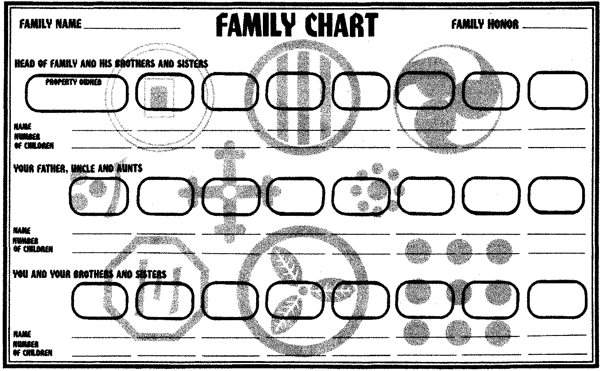

家族图 · Family Chart

| 原表字段 | 中文及填写位置 |
|---|---|
| Family Name | 顶部左侧：家族名 |
| Family Honor | 顶部右侧：家族荣誉 |
| Head of Family and His Brothers and Sisters | 第一排：家主及其兄弟姐妹 |
| Your Father, Uncle and Aunts | 第二排：父亲及叔伯、姑姨等上一代亲属 |
| You and Your Brothers and Sisters | 第三排：你及你的兄弟姐妹 |
| Property Owned | 成员框内：所拥有的财产 |
| Name | 对应成员框下第一行：姓名 |
| Number of Children | 对应成员框下第二行：子女数量 |
原表每排有八个成员框，三排共二十四框；位置、空白填写线及背景家纹保留在图中。本图本身未用连线规定具体亲属之间的关系。